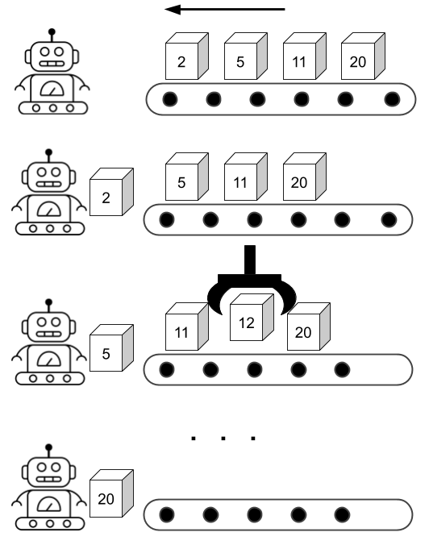

Chapter 1: Discrete Event Simulation¶
SeQUeNCe is a quantum network simulator based on discrete event simulation (DES). DES models systems as a sequence of discrete events. In this chapter, we will:
Introduce the basic concepts if DES (to avoid going through Wikipedia)
Use the API of the SeQUeNCe kernel to simulate a simple system
DES Background¶
The events in DES define a change of state of the system. The kernel of DES schedules and executes events in the simulated system, ordered by their time of occurrence. The executed events may generate several new events.
Note: executed events cannot generate events before the current (simulation) time.
We use the below figure to show the procedure of DES. The robot in the figure denotes the kernel of DES. The belt in figure denotes the event list of DES. The could put several boxes on the belt manually as the initial state. The robot will repeatedly processes the nearest box (event). While the robot is processing some boxes (e.g box 5), a new box (e.g box 12) may be created and placed at the correct position. The robot stops work when the belt is empty or a simulation end condition is met.

Example: Open and Close Store¶
Step 1: Create Store Class¶
Let’s use DES to simulate the business hours of a store. First, we create a class for our store:
from sequence.kernel.timeline import Timeline
class Store(object):
def __init__(self, tl: Timeline):
self.open = False
self.timeline = tl
def open(self) -> None:
self.open = True
def close(self) -> None:
self.open = False
The Store class has two attributes: open and timeline.
open denotes the if the store is in its business hours.
The timeline is an instance of a DES kernel.
We will use the timeline to bind entities to the DES kernel.
The Store class also has two methods: open and close.
These two functions change the state of the store.
Step 2: Schedule Events on Store¶
Let’s define a store that opens at 7:00.
from sequence.kernel.event import Event
from sequence.kernel.process import Process
tl = Timeline() # create timeline
tl.show_progress = False # turn of progress bar, we will address this in later tutorials.
store = Store(tl) # create store
# open store at 7:00
open_proc = Process(store, 'open', []) # Process(object, function name: string, arguments of function: List[])
open_event = Event(7, open_proc) # Event(occurring time: int, process: Process)
tl.schedule(open_event) # Timeline.schedule(Event)
In the above code, we first create instances of Timeline and Store.
Then, we create a process with the object being Store, the method of Store and a list of arguments for the method.
The Event class uses open_proc process to create an event occurring at 7:00.
The object Timeline then schedules the created event in its event list.
Question: after the above code executes, what is the state of store?
print(store.open) # False
Step 3: Run Simulation¶
You can observe the state of the store is still closed as the simulator has not executed the open function yet.
We just placed the created event into the event list.
To run the simulation, we need use Timeline.run() to process the scheduled events.
tl.run()
print(tl.now(), store.open) # 7 True
Now, the state of store is updated to the open state.
Meanwhile, the function Timeline.now() presents the current simulation time (7).
When the simulator executes an event, the simulator will update its time to the timestamp of the event.
Quiz: can you change the store to close at 19:00?
An example of closing the store is shown below.
close_proc = Process(store, 'close', [])
close_event = Event(19, close_proc)
tl.schedule(close_event)
tl.run()
print(tl.time, store.open) # 19 False
Question: will the state of store change if we schedule close_event first, then open_event?
tl.time = 0
tl.schedule(open_event)
tl.schedule(close_event)
tl.run()
print(tl.time, store.open)
tl.time = 0
tl.schedule(close_event)
tl.schedule(open_event)
tl.run()
print(tl.time, store.open)
You can compare the results of the above programs.
Both generate the same result (19 False), as the order of executing events does not rely on the order of calling the scheduling method.
Example: Automatically Open and Close Store¶
Step 1: Upgrade Store Class¶
The previous example allows us to open and close the store manually.
In this example, we upgrade Store to open and close automatically with 12 business hours.
The code of the upgraded Store is shown below.
from sequence.kernel.timeline import Timeline
from sequence.kernel.event import Event
from sequence.kernel.process import Process
class Store(object):
def __init__(self, tl: Timeline):
self.open = False
self.timeline = tl
def open(self) -> None:
self.open = True
process = Process(self, 'close', [])
event = Event(self.timeline.now() + 12, process)
self.timeline.schedule(event)
def close(self) -> None:
self.open = False
process = Process(self, 'open', [])
event = Event(self.timeline.now() + 12, process)
self.timeline.schedule(event)
The updated Store.open()(Store.close()) function schedules a Store.close() (Store.open()) after 12 hours.
Now, the Store can repeatedly open and close every 12 hours.
Step 2: Schedule Initial Event¶
We can then define a store with an initial state - that the store opens at 7.
tl = Timeline()
tl.show_progress = False
store = Store(tl)
process = Process(store, 'open', [])
event = Event(7, process)
tl.schedule(event)
However, if you use tl.run() to run the simulation, the simulation will get stuck in an infinite loop.
Step 3: Define the Condition of Stopping Simulation and Run Simulation¶
There are two methods to terminate simulation:
set the stop time of simulation when creating the
Timelinestop the simulation in a function of
Store
For the first method, we can construct the object of Timeline with the code below:
tl = Timeline(60) # simulate system for 60 hours
For the second method, we can call Timeline.stop() in the Store.open() and Store.close() methods:
...
def open(self) -> None:
if self.timeline.now() >= 60:
self.timeline.stop()
self.open = True
process = Process(self, 'close', [])
event = Event(self.timeline.now() + 12, process)
self.timeline.schedule(event)
...
def close(self) -> None:
if self.timeline.now() >= 60:
self.timeline.stop()
self.open = False
process = Process(self, 'open', [])
event = Event(self.timeline.now() + 12, process)
self.timeline.schedule(event)
...
with the above methods, we can observe the state of store after a specfic time.
for t in [15, 32, 52]:
tl = Timeline(t)
store = Store(tl)
print(tl.now())
process = Process(store, 'open', [])
event = Event(7, process)
tl.schedule(event)
tl.run()
print(store.open)
# True, True, False